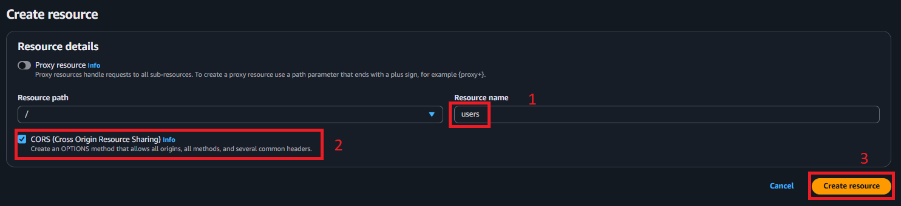
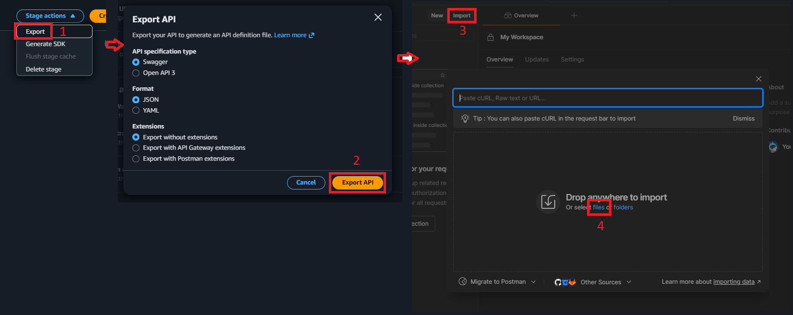
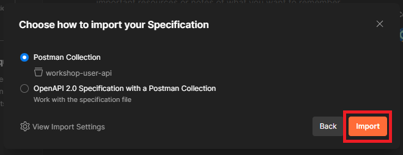
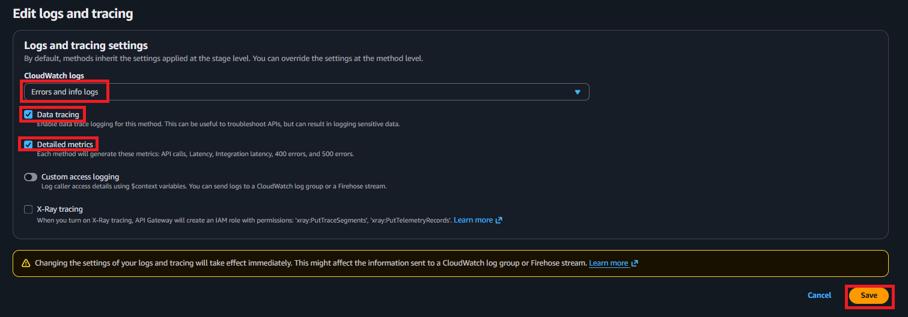
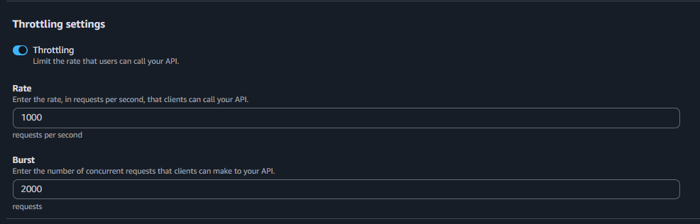

API Gateway Setup
Overview
In this section, you’ll create an Amazon API Gateway REST API that serves as the entry point for your serverless backend. API Gateway will receive HTTP requests from clients, route them to your Lambda function, and return responses.
What you’ll accomplish:
- Understand API Gateway concepts and integration types
- Create a REST API in API Gateway
- Define resources and methods for user operations
- Configure Lambda proxy integration
- Enable CORS for frontend integration
- Deploy API to a stage
- Test API endpoints with various tools
- Monitor API usage and performance
- Understand API Gateway pricing
Estimated time: 40-50 minutes
API Gateway Architecture
What We’ll Build
Client (Browser/Mobile/Postman)
↓
HTTPS Request
↓
API Gateway REST API
├── POST /users → Lambda (Create User)
├── GET /users → Lambda (Get All Users)
├── GET /users/{id} → Lambda (Get Single User)
├── PUT /users/{id} → Lambda (Update User)
└── DELETE /users/{id} → Lambda (Delete User)
↓
Lambda Function (workshop-userHandler)
↓
RDS PostgreSQL
Costs Considerations
Free-tier:
1M REST API CALLS RECEIVED | 1M HTTP API CALLS RECEIVED | 1M MESSAGES | 750,000 CONNECTION MINUTES per month
Paid-tier
-
REST API
API Calls (per month) Price (per million) First 333 million $4.25 Next 667 million $3.53 Next 19 billion $3.00 Over 20 billion $1.91 -
Caching: 0.5GB -> $0.028/hour
-
Additional costs: CloudWatch logs (free-tier eligible)
-
Overall: <$5 (clean up immediately after finish workshop)
API Gateway Concepts
REST API:
- Resource-based API (e.g.,
/users,/users/{id}) - Supports all HTTP methods (GET, POST, PUT, DELETE, etc.)
- Request/response transformation
- Built-in throttling and caching
Resources:
- URL paths (e.g.,
/users) - Can be nested (e.g.,
/users/{id}/tasks)
Methods:
- HTTP operations on resources (GET, POST, PUT, DELETE)
- Each method can have different integration
Integration Types:
- Lambda Proxy: Passes entire request to Lambda (recommended)
- Lambda: Custom request/response mapping
- HTTP: Proxy to HTTP endpoint
- Mock: Returns static response
- AWS Service: Direct AWS service integration
Stages:
- Deployment environments (e.g., dev, staging, prod)
- Each stage has unique URL
- Can have different settings per stage
Step 1: Create REST API
1.1 Navigate to API Gateway Console
- Go to AWS Console
- Search for “API Gateway”
- Click API Gateway under Services

1.2 Create API
- Click Create an API
You’ll see several API types:
- HTTP API: Simpler, cheaper, faster (70% cost reduction)
- REST API: Full features, request/response transformation
- WebSocket API: Real-time bidirectional communication
- REST API (Private): VPC-only access
- Under REST API, click Build

1.3 Configure API Settings
- Choose the protocol:
- Keep REST selected
- Create new API:
- Select New API
API details:
-
API name:
workshop-user-api -
Description:
REST API for user management in serverless workshop -
Endpoint Type:
- Select Regional
- Deployed in current region
- Lower latency for users in same region
- Can add CloudFront later for global distribution
Endpoint Types:
Regional: Deployed in a single region, recommended for most use cases
Edge Optimized: Automatically distributed via CloudFront (adds latency for regional traffic)
Private: Only accessible within VPC
For this workshop, Regional is best. You already have CloudFront from Part 1: Frontend Deployment if you want global distribution.
- Security policy
- Select SecurityPolicy_TLS13_1_2_2021_06
- This option protects data in transit between a client and server with TLS 1.3
- Click Create API

You’ll be taken to the API Gateway console showing your new API.

Step 2: Create Resources and Methods
2.1 Create /users Resource
A resource represents a REST API endpoint path.
- In the API Gateway console, select Resources in left navigation (if not already selected)
- Click Create Resource
Proxy resource:
- Essentially a catch-all resource
- A proxy resource (often created as {proxy+}) is a special type of resource in API Gateway that forwards all requests to a single backend (such as a Lambda function) — regardless of the URL path or HTTP method.
- We won’t be using this for our workshop since our API is simple
Resource Path: /
Resource Name: users
- This becomes the URL path
CORS:
- Check this box
- Automatically adds OPTIONS method with CORS headers
- Enable CORS on all child methods
- Required for browser-based frontends

- Click Create Resource
You’ll see /users appear in the resource tree.

2.2 Create /users/{id} Resource
Create a child resource with path parameter for single user operations.
- Select
/usersresource (click on it) - Click Create method
New Child Resource:
Resource Path: user
- Singular, represents a single user
Resource Name: {id}
- Curly braces indicate a path parameter
CORS:
- Check this box

- Click Create Resource
Your resource tree now shows:

2.3 Create POST Method on /users
Methods define HTTP operations on resources.
- Click on
/usersresource - Click Create Method
- Select POST
Setup - POST:
Integration type:
- Select Lambda Function
Use Lambda Proxy integration:
- Check this box
- Passes entire request to Lambda as-is
- Lambda returns API Gateway-formatted response
Lambda Region:
- Select your region (e.g.,
ap-southeast-1)
Lambda Function:
- Type:
workshop-lambda-sm-rds - Should auto-complete
Permission prompt: You’ll see a popup: “Add Permission to Lambda Function”
This grants API Gateway permission to invoke your Lambda function.
- Click Create method

2.4 Create GET Method on /users
Get all users.
- Click on
/usersresource - Click Create Method
- Method: GET
Setup - GET:
- Integration type: Lambda Function
- Use Lambda Proxy integration: Checked
- Lambda Function:
workshop-lambda-sm-rds
- Click Create method
2.5 Create GET Method on /users/{id}
Get single user.
- Click on
/users/{id}resource - Click Create Method
- Method: GET
Setup - GET:
- Integration type: Lambda Function
- Use Lambda Proxy integration: Checked
- Lambda Function:
workshop-lambda-sm-rds
- Click Create method
2.6 Create PUT Method on /users/{id}
Update user.
- Click on
/users/{id}resource - Click Create Method
- Method: PUT
Setup - PUT:
- Integration type: Lambda Function
- Use Lambda Proxy integration: Checked
- Lambda Function:
workshop-lambda-sm-rds
- Click Create method
2.7 Create DELETE Method on /users/{id}
Delete user.
- Click on
/users/{id}resource - Click Create Method
- Method: DELETE
Setup - DELETE:
- Integration type: Lambda Function
- Use Lambda Proxy integration: Checked
- Lambda Function:
workshop-lambda-sm-rds
- Click Create method
2.8 Verify Resource Structure
Your API structure should now look like:

2.9 Enable CORS on each resources
- Click /users resource
- Click Enable CORS
- Select the methods: GET, POST
- Access-Control-Allow-Origin: input your CloudFront endpoint to restrict origin, or
*for debug - Click Save

- Do the same for /{id} resource (methods: GET, PUT, DELETE)
- After enabling CORS for those two resources, you will see OPTION method in each resource
- Click on OPTION method, go to Integration response to see the details

Step 3: Deploy API
APIs must be deployed to a stage before they’re accessible.
3.1 Create Deployment
- Click Deploy API
Deployment stage:
- Select [New Stage]
Stage name: dev
- Short for development
- Other common names:
prod,staging,test
Stage description: Development stage for workshop
Deployment description: Initial deployment

- Click Deploy
3.2 Get API Endpoint
After deployment, you’ll see the Stage Editor.
Invoke URL is your API’s base URL:
https://abc123xyz.execute-api.[region].amazonaws.com/dev

Step 5: Test API Endpoints
5.1 Test with API Gateway Console
API Gateway provides a built-in testing tool.
Test POST /users (Create User):
- In the left navigation, click Resources
- Click on
/users→ POST method - Go to *Test tab
Request Body:
{
"cognitoSub": "test-sub-123",
"username": "Test User",
"email": "test@example.com",
"role": "user",
"phoneNumber": "1234567890"
}

- Click Test
Expected Response:
Status: 201
Response Body:
{
"success": true,
"data": {
"id": 3,
"cognito_sub": "test-sub-123",
"username": "Test User",
"email": "test@example.com",
"role": "user",
"phone_number": "1234567890"
}
}
Response Headers:
Content-Type: application/json
Logs: Shows Lambda execution logs inline

Test GET /users (Get All Users):
- Click on
/users→ GET method - Click Test
- No request body needed
- Click Test
Expected Response:
Status: 200
Response Body:
{
"success": true,
"data": [
{
"id": 1,
"cognito_sub": "demo-sub-1",
"username": "Alice",
"email": "alice@example.com",
"role": "admin",
"phone_number": "1234567890"
},
{
"id": 2,
"cognito_sub": "demo-sub-2",
"username": "Bob",
"email": "bob@example.com",
"role": "user",
"phone_number": "0987654321"
},
{
"id": 3,
"cognito_sub": "test-sub-123",
"username": "Test User",
"email": "test@example.com",
"role": "user",
"phone_number": "1234567890"
}
]
}

Test GET /users/{id} (Get Single User):
- Click on
/users/{id}→ GET method - Click Test
Path Parameters:
- id:
1

- Click Test
Expected Response:
Status: 200
Response Body:
{
"success": true,
"data": {
"id": 1,
"cognito_sub": "demo-sub-1",
"username": "Alice",
"email": "alice@example.com",
"role": "admin",
"phone_number": "1234567890"
}
}
5.2 Test with curl (Command Line)
Test your deployed API from terminal:
Set your API URL:
API_URL="https://YOUR-API-ID.execute-api.[region].amazonaws.com/dev"
Create User:
curl -X POST "${API_URL}/users" \
-H "Content-Type: application/json" \
-d '{
"cognitoSub": "curl-test-456",
"username": "Curl User",
"email": "curl@example.com",
"role": "user",
"phoneNumber": "5551234567"
}'
Get All Users:
curl -X GET "${API_URL}/users"
Get Single User:
curl -X GET "${API_URL}/users/1"
Update User:
curl -X PUT "${API_URL}/users/1" \
-H "Content-Type: application/json" \
-d '{
"username": "Updated Name",
"email": "updated@example.com",
"role": "admin",
"phoneNumber": "9998887777"
}'
Delete User:
curl -X DELETE "${API_URL}/users/3"
5.3 Test with Postman
Postman provides a user-friendly interface for API testing.
Import API to Postman:
- In API Gateway console, go to Stages → dev
- Click Stage action → Export
- In the Export API modal, leave all settings as default. Click Export API
- Download the json file
- Open Postman, click Import
- On the opened modal, click files

- On the next modal, click Import

- Expand workshop-user-api, select GET /users to test get all users route
- Click Send
- View response

Step 6: Configure Stage Settings
6.1 Enable CloudWatch Logging
- In API Gateway console, go to Stages
- Click dev stage
- Under Logs and racing card, click Edit
CloudWatch Settings:
CloudWatch Logs:
- Select Errors and info logs
- This includes
- Request received
- Request body (if enabled)
- Integration request
- Integration response
- Execution summary
- Errors
Data tracing:
- Check this box (for development)
- Logs request/response bodies
- Disable in production (may contain sensitive data)
Enable Detailed Metrics:
- Check this box
- Provides method-level metrics
- Small additional cost ($0.50/month per metric)

- Click Save Changes
Grant API Gateway Permission:
If this is your first API with logging, you’ll need to set up an IAM role:
- In IAM dashboard, create role with:
- Trusted entity type: AWS Service
- Use case: API Gateway
- Policy: AmazonAPIGatewayPushToCloudWatchLogs
- Role name:
api-gw-push-cloudwatch-logs
- Copy the Role ARN
- Go back to API Gateway dashboard
- On the left sidebar, click Settings
- In Logging, click Edit
- Paste the Role ARN to the textbox
- Click Save changes
6.2 Configure Throttling
Protect your API from abuse with rate limiting.
- Still in dev stage settings
- in Stage details card, click Edit
Throttling settings:
Enabled
Rate: 1000 requests per second
- Burst capacity for temporary spikes
Burst: 2000 requests
- Total requests allowed in burst

Throttling Limits:
When limits are exceeded:
- Client receives 429 Too Many Requests
- Requests are rejected before reaching Lambda
- Protects backend from overload
- No Lambda costs for throttled requests
Default AWS Account Limits:
- 10,000 requests per second per region
- Can request increase via support ticket
For this workshop, 1000 req/s is more than sufficient.
6.3 Enable Caching (Optional)
API caching reduces Lambda invocations and improves performance.
- In dev stage, click Settings tab
- Scroll to Cache Settings
Provision API cache:
- Check this box
Cache capacity: 0.5 GB
- Smallest size
- Sufficient for workshop
Cache time-to-live (TTL): 300 seconds (5 minutes)
- How long responses are cached
Per-key cache invalidation:
- Invalidate certain data in cache based on a key instead of the whole cache

Caching Costs:
API Gateway caching is relatively expensive:
- 0.5 GB cache: $0.028/hour (~$20.16/month)
For this workshop: Skip caching to avoid costs. It’s included here for completeness.
When to use caching:
- High read traffic (>1000 req/min)
- Data doesn’t change frequently
- Latency is critical
- Cost of Lambda invocations > cost of cache
For user data that changes frequently, caching may not be appropriate.
Step 7: Monitor API Performance
7.1 View API Gateway Metrics
- In API Gateway console, go to Dashboard (left navigation)
- Select your API:
workshop-user-api - Select stage:
dev
Metrics displayed:
API calls:
- Total number of requests over time period
- Broken down by hour/day
Integration latency:
- Time spent in Lambda function
- Excludes API Gateway overhead
Latency:
- Total request time (API Gateway + Lambda)
- Includes network, integration, and processing time
4XX errors:
- Client errors (bad requests, not found, etc.)
- Should be low in well-designed APIs
5XX errors:
- Server errors (Lambda errors, timeouts, etc.)
- Should be monitored closely

7.2 View CloudWatch Logs
- Go to CloudWatch console
- Click Log groups
- Find:
API-Gateway-Execution-Logs_{api-id}/dev - Click on log group
- Click on latest log stream
Sample log entry:
(abc-123-def) Method request body before transformations: {
"cognitoSub": "test-123",
"username": "Test User",
"email": "test@example.com",
"role": "user",
"phoneNumber": "1234567890"
}
(abc-123-def) Endpoint request URI: https://lambda.us-east-1.amazonaws.com/2015-03-31/functions/arn:aws:lambda:us-east-1:123456789012:function:workshop-userHandler/invocations
(abc-123-def) Endpoint response body before transformations: {
"statusCode": 201,
"headers": {
"Content-Type": "application/json"
},
"body": "{\"success\":true,\"data\":{\"id\":1,...}}"
}
(abc-123-def) Method response body after transformations: {
"success": true,
"data": {
"id": 1,
"cognito_sub": "test-123",
"username": "Test User",
"email": "test@example.com",
"role": "user",
"phone_number": "1234567890"
}
}
(abc-123-def) Method completed with status: 201

Summary
Congratulations! You’ve successfully:
- Created REST API in API Gateway
- Defined resources and methods for CRUD operations
- Configured Lambda proxy integration
- Enabled CORS for frontend compatibility
- Deployed API to dev stage
- Tested endpoints with multiple tools
- Configured logging and monitoring
- Set up throttling for protection
What You’ve Built
Your API Gateway now provides:
- RESTful endpoints for all user operations
- HTTPS security by default
- CORS support for frontend integration
- Request throttling for protection
- CloudWatch logging for debugging
- Metrics for monitoring
Next Steps
Proceed to Part 6: Amazon Cognito Configuration to secure API endpoints with authorization provided by AWS Cognito
Ready to continue? Your API endpoints are now fully functional and ready! 🚀